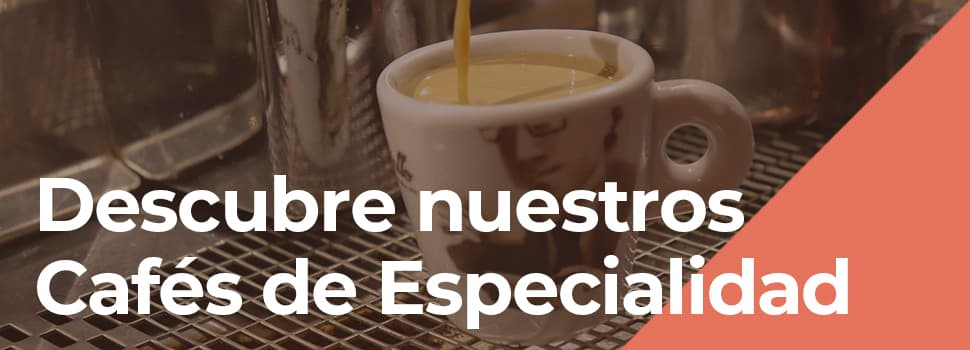

EN NUESTRA CARTELERA DE CAFES ENCUENTRA
El café expreso consiste en uno de los tipos de café más básicos y sencillos. Su elaboración es muy fácil y, únicamente, consiste en realizar la infusión de café llevando a ebullición el agua para que entren en contacto con los granos de café molidos.
Asimismo, se puede preparar en pocos segundos y se suele servir en un vaso o taza pequeña de, aproximadamente, 30 centilitros.
Es un tipo de café corto y nosotros te recomendamos que utilices café de la variante arábica, que aporta algo de espuma en la zona superior y deja un regusto dulce en el paladar.
Comúnmente conocido como café cortado o macchiato, este tipo de café es uno de los más demandados.
Para saber cómo es su elaboración, debes preparar un café espresso y añadirle una pequeña cantidad de leche para que tiña el café o lo “manche”, de ahí su nombre.
Otro de los tipos diferentes de café más solicitados en cafeterías es el café ristretto.
Si sabes preparar un café espresso, sabrás elaborar un ristretto. Consiste en una elaboración similar al expreso, puesto que se caracteriza por utilizar la misma cantidad de café, aunque empleando una proporción menor de agua.
Para saber cómo es preparar un café lungo, debemos pensar al contrario que para preparar un café ristretto.
El café lungo o largo se trata de un tipo de café en el que la extracción de agua en contacto con los granos de café molidos se realiza de manera más prolongada, lo que conlleva más cantidad de infusión.
Suele servirse en tazas grandes o incluso vasos largos.
El café latte macchiato está consiguiendo cada día más adeptos y nosotros estamos muy de acuerdo. La razón la encontramos en que se trata de uno de los tipos de café más deliciosos.
Para preparar un latte macchiato, se utiliza un café expreso como base con el que llenaremos, aproximadamente, un cuarto de nuestra taza de café o vaso alto. A continuación, añadiremos la mitad de leche caliente y una cuarta parte de leche vaporizada para conseguir espuma de leche.
Para que su sabor sea también espectacular, pondremos atención en seleccionar granos de calidad y molerlos en casa o utilizar café cuyos granos ya estén molidos.
El café con leche es otro de los tipos de café que más se pide en cafeterías. Guarda algunas semejanzas con la preparación del café latte macchiato, pero sus características marcan la diferencia en cuanto a cómo se preparan ambos.
Para la preparación de un café con leche, utilizaremos una proporción muy semejante de leche y café, 50% – 50%, aproximadamente. En su elaboración, recuerda al café cortado, aunque con más cantidad de leche y café.
Con su elaboración, conseguimos un sabor más dulce y menos intenso, aunque el nivel de cafeína sigue siendo muy potente.
Otro de los tipos de café más habituales, es muy similar al café con leche, aunque con ligeros matices que hacen de este tipo de bebida una delicia.
Un café cappuccino o capuchino se prepara con un café espresso y partes iguales de leche y crema o espuma de leche.
Además, suele añadirse también algo de cacao en polvo de manera espolvoreada para aplicar un toque diferente y dulce al sabor de esta bebida.
Para la elaboración de este tipo de café, se utiliza sí o sí chocolate o cacao, ya sea en forma de sirope, ya sea en polvo. El café mocca parte de la elaboración tradicional del café con leche, rematando la preparación con ese sabor dulce.
Dentro de las diferentes versiones del café con leche, nos encontramos el café bombón, uno de los tipos de bebida que más gusta por su sabor.
En definitiva, el café bombón es una bebida más dulce del café con leche. Su elaboración se consigue sustituyendo la leche normal por leche condensada.
Para su preparación, te aconsejamos que eches primero la leche condensada y luego añadas el café. ¡El efecto visual será más bonito!

Para conseguir un buen café vienés, deberás utilizar crema o nata. El método de preparación es realizar un café expreso y añadir, en proporción inferior a la del café, este tipo de lácteo. ¡Delicioso!
Este tipo de bebida espresso doble se prepara una parte de whisky y otra de crema o nata montada, consiguiendo un sabor dulce y amargo a la vez.
Para presentarlo, nosotros te sugerimos que lo hagas en una copa de cóctel.
Para disfrutar de un excelente carajillo, uno de los tipos de café diferentes más extendidos de España, será necesario que encuentres un vaso de cristal pequeño.
Tiene como base un café expreso, al que se le añade una cantidad de licor, dependiendo de las preferencias del usuario.
Los licores más comunes con los que elaborar un carajillo son el brandy o coñac, whisky, anís, orujo o aguardiente, ron o baileys, entre otros. Asimismo, lo ideal es echar el licor previamente calentado y, a continuación, el café espresso.
El café americano es un derivado del café expreso, aunque con una cantidad más alta de agua. Como resultado, se obtiene una bebida menos potente en cuanto a cafeína, más aguada, y, precisamente por ello, con un sabor menos amargo y más dulce.
Si pensamos en un café frío, dentro de los diferentes tipos de café, nos vendrá a la mente el café frappé. Para su elaboración, se utiliza un café instantáneo molido, al que se le añade hielo y crema de leche o nata.
También dentro de los tipos de café frío, el café azteca incorpora, además del café, el hielo y la leche, una o dos bolas de helado.